MedGuide - Osteologiya Kartochkalari

#OST-1: Os frontale (Peshona suyagi)
- LA: Os frontale (Impar)[cite: 1]
- UZ: Peshona suyagi (toq)[cite: 1]
- EN: Frontal bone (Unpaired)[cite: 1]
- RU: Лобная кость (Непарный)[cite: 1]
- TR: Alın kemiği (Tek)[cite: 1]
Squama frontalis (Peshona tangachasi), Partes orbitales (Ko'z kosa qismlari), Pars nasalis (Burun qismi), Sinus frontalis (Peshona havo yo'li bo'shlig'i)[cite: 1].
Incisura / Foramen supraorbitale ➔ N. supraorbitalis (V1 tarmoqlari)[cite: 1].
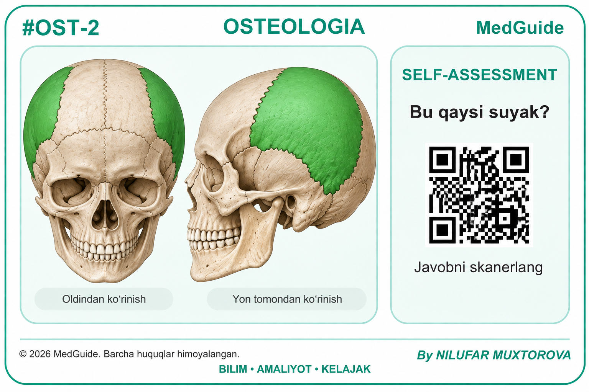
#OST-2: Os parietale (Teppa suyagi)[cite: 1]
- LA: Os parietale (Par)[cite: 1]
- UZ: Teppa suyagi (juft)[cite: 1]
- EN: Parietal bone (Paired)[cite: 1]
- RU: Теменная кость (Парный)[cite: 1]
- TR: Yan kafa kemiği (Çift)[cite: 1]
Tuber parietale (Teppa do'ngchasi), Linea temporalis superior et inferior, Margo sagittalis, squamosus, frontalis, occipitalis[cite: 1].
Foramen parietale (Parietal teshik) ➔ Vena emissaria parietalis (venoz oqim)[cite: 1].

#OST-3: Os occipitale (Ensa suyagi)[cite: 1]
- LA: Os occipitale (Impar)[cite: 1]
- UZ: Ensa suyagi (toq)[cite: 1]
- EN: Occipital bone (Unpaired)[cite: 1]
- RU: Затылочная кость (Непарный)[cite: 1]
- TR: Ard kafa kemiği (Tek)[cite: 1]
Pars basilaris (Asosiy qism), Partes laterales (Yon qismlar) — Condylus occipitalis, Squama occipitalis (Ensa tangachasi)[cite: 1].
Foramen magnum ➔ Orqa miya va bosh miya tutashuvi, umurtqa arteriyalari; Canalis n. hypoglossi ➔ N. hypoglossus (XII)[cite: 1].
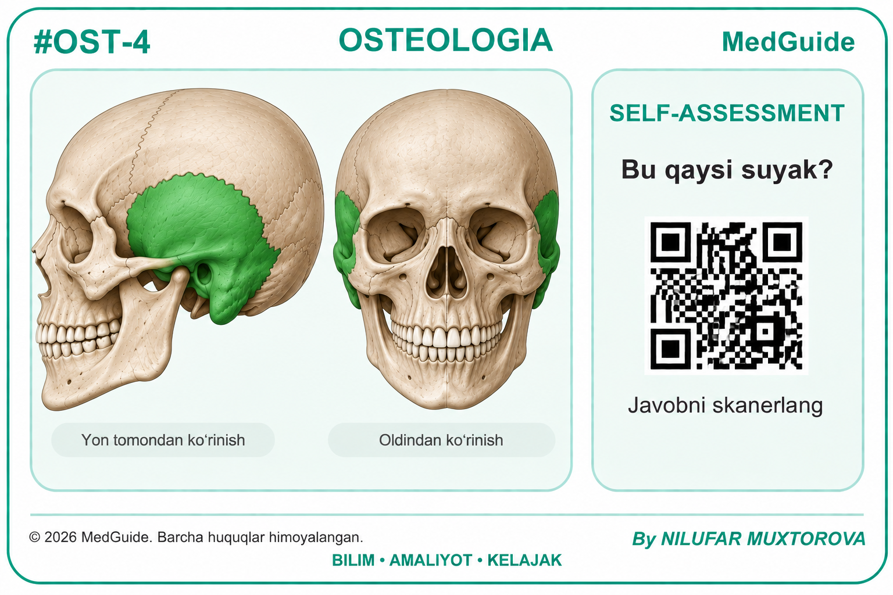
#OST-4: Os temporale (Chakka suyagi)[cite: 1]
- LA: Os temporale (Par)[cite: 1]
- UZ: Chakka suyagi (juft)[cite: 1]
- EN: Temporal bone (Paired)[cite: 1]
- RU: Височная кость (Парный)[cite: 1]
- TR: Şakak kemiği (Çift)[cite: 1]
Pars squamosa (Tangacha qism), Pars tympanica (Tovush yo'li qismi), Pars petrosa / Pyramis (Tosh qism / Piramida), Processus styloideus va mastoideus[cite: 1].
Canalis caroticus ➔ A. carotis interna; Meatus acusticus internus ➔ N. facialis (VII), N. vestibulocochlearis (VIII); Canalis facialis ➔ N. facialis[cite: 1].

#OST-5: Os sphenoidale (Ponasimon suyak)[cite: 1]
- LA: Os sphenoidale (Impar)[cite: 1]
- UZ: Ponasimon suyak (toq)[cite: 1]
- EN: Sphenoid bone (Unpaired)[cite: 1]
- RU: Клиновидная кость (Непарный)[cite: 1]
- TR: Temel kemik (Tek)[cite: 1]
Corpus (Tana) — Sella turcica, Alae majores (Katta qanotlar), Alae minores (Kichik qanotlar), Processus pterygoidei[cite: 1].
Canalis opticus ➔ N. opticus (II); Fissura orbitalis superior ➔ III, IV, V1, VI juft bosh miya nervlari; Foramen rotundum ➔ N. maxillaris (V2); Foramen ovale ➔ N. mandibularis (V3)[cite: 1].
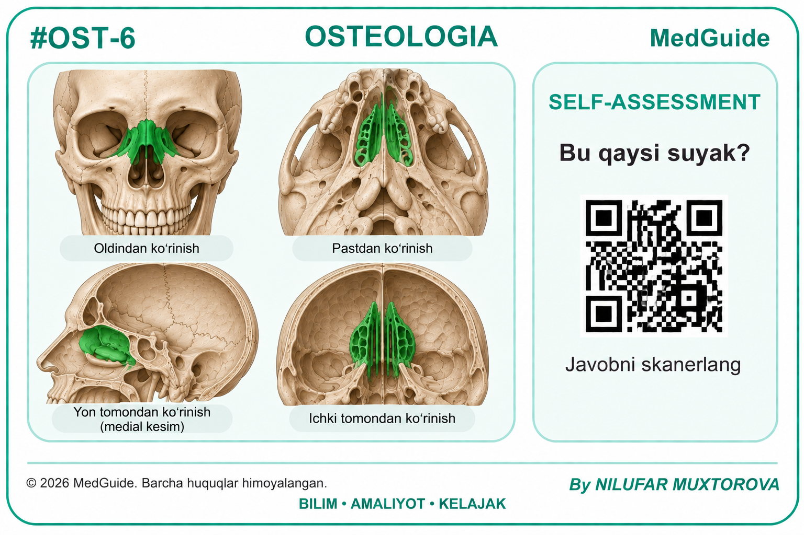
#OST-6: Os ethmoidale (G'alvirsimon suyak)[cite: 1]
- LA: Os ethmoidale (Impar)[cite: 1]
- UZ: G'alvirsimon suyak (toq)[cite: 1]
- EN: Ethmoid bone (Unpaired)[cite: 1]
- RU: Решетчатая кость (Непарный)[cite: 1]
- TR: Kalbur kemiği (Tek)[cite: 1]
Lamina cribrosa (G'alvirsimon plastinka), Lamina perpendicularis (Tik plastinka), Labyrinthus ethmoidalis (Cellulae ethmoidales)[cite: 1].
Foramina cribrosa ➔ Fila olfactoria (I juft hid bilish nervi tolalari)[cite: 1].

#OST-7: Maxilla (Yuqori jag')[cite: 1]
- LA: Maxilla (Par)[cite: 1]
- UZ: Yuqori jag' (juft)[cite: 1]
- EN: Upper jaw (Maxilla) (Paired)[cite: 1]
- RU: Верхняя челюсть (Парный)[cite: 1]
- TR: Üst çene kemiği (Çift)[cite: 1]
Corpus maxillae (Sinus maxillaris), Processus frontalis, zygomaticus, alveolaris, palatinus[cite: 1].
Foramen infraorbitale ➔ N. infraorbitalis (V2 tarmog'i); Canalis incisivus ➔ N. nasopalatinus[cite: 1].
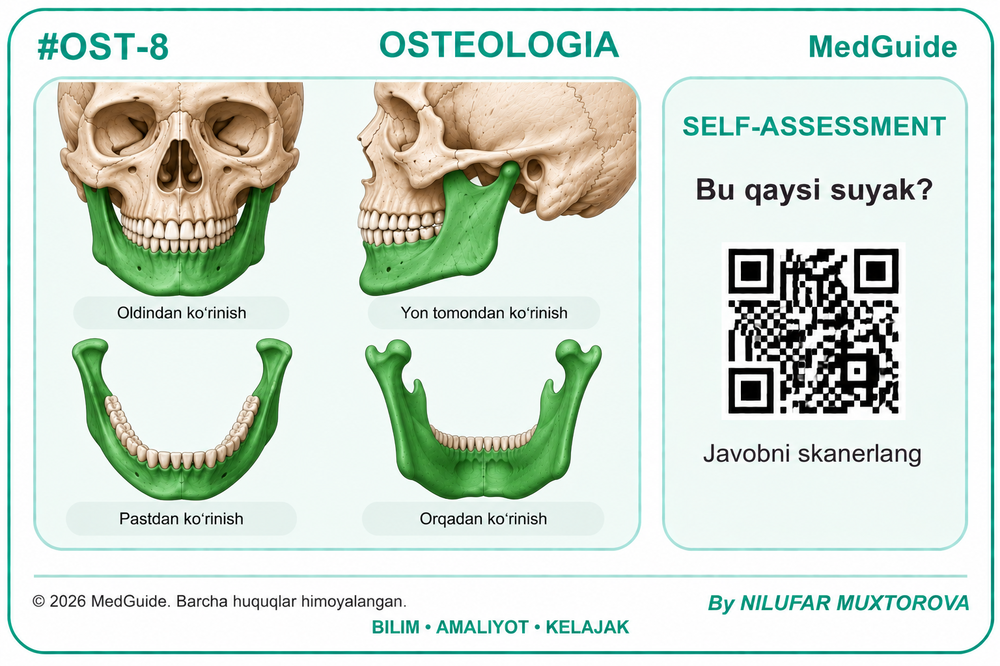
#OST-8: Mandibula (Pastki jag')[cite: 1]
- LA: Mandibula (Impar)[cite: 1]
- UZ: Pastki jag' (toq)[cite: 1]
- EN: Lower jaw (Mandible) (Unpaired)[cite: 1]
- RU: Нижняя челюсть (Непарный)[cite: 1]
- TR: Alt çene kemiği (Tek)[cite: 1]
Corpus mandibulae (Tana), Ramus mandibulae (Tarmoq), Processus condylaris va coronoideus[cite: 1].
Foramen mandibulare ➔ N. alveolaris inferior; Foramen mentale ➔ N. mentalis[cite: 1].
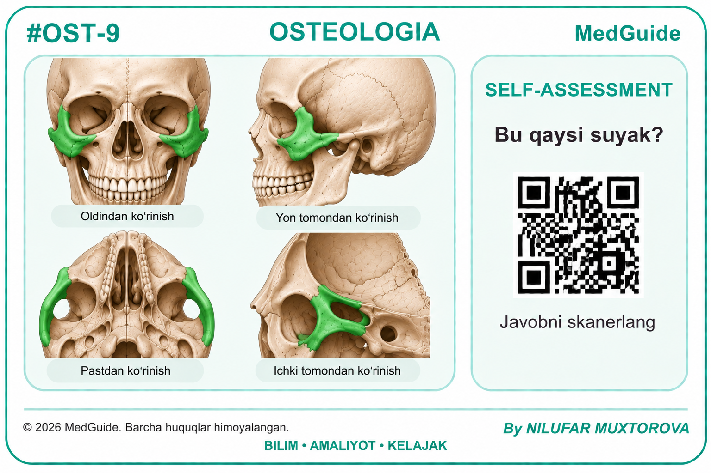
#OST-9: Os zygomaticum (Yonoq suyagi)[cite: 1]
- LA: Os zygomaticum (Par)[cite: 1]
- UZ: Yonoq suyagi (juft)[cite: 1]
- EN: Cheekbone (Zygomatic) (Paired)[cite: 1]
- RU: Скуловая кость (Парный)[cite: 1]
- TR: Elmacık kemiği (Çift)[cite: 1]
Facies lateralis, orbitalis, temporalis; Processus frontosphenoidalis, maxillaris, temporalis[cite: 1].
Foramen zygomaticoorbitale ➔ N. zygomaticofacialis va zygomaticotemporalis[cite: 1].

#OST-10: Os nasale (Burun suyagi)[cite: 1]
- LA: Os nasale (Par)[cite: 1]
- UZ: Burun suyagi (juft)[cite: 1]
- EN: Nasal bone (Paired)[cite: 1]
- RU: Носовая кость (Парный)[cite: 1]
- TR: Burun kemiği (Çift)[cite: 1]
Yuqori qismi qalin va tor, pastki qismi kengaygan plastinka shaklida. Tashqi yuzasi biroz qavariq, ichki yuzasi burun bo'shlig'iga qaragan[cite: 1].
Foramen nasale ➔ Tomir va nerv shoxchalarining o'tish teshikchalari[cite: 1].
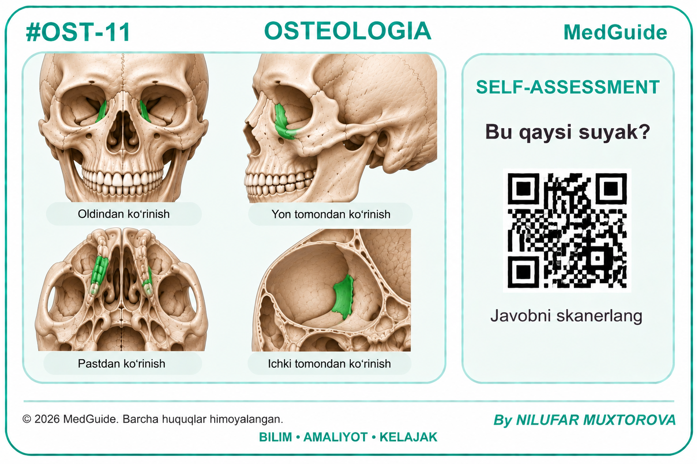
#OST-11: Os lacrimale (Ko'z yosh suyagi)[cite: 1]
- LA: Os lacrimale (Par)[cite: 1]
- UZ: Ko'z yosh suyagi (juft)[cite: 1]
- EN: Lacrimal bone (Paired)[cite: 1]
- RU: Слезная кость (Парный)[cite: 1]
- TR: Gözyaşı kemiği (Çift)[cite: 1]
Crista lacrimalis posterior, Sulcus lacrimalis[cite: 1].
Canalis nasolacrimalis hosil qilishda qatnashadi ➔ Ko'z yosh yo'li o'tadi[cite: 1].
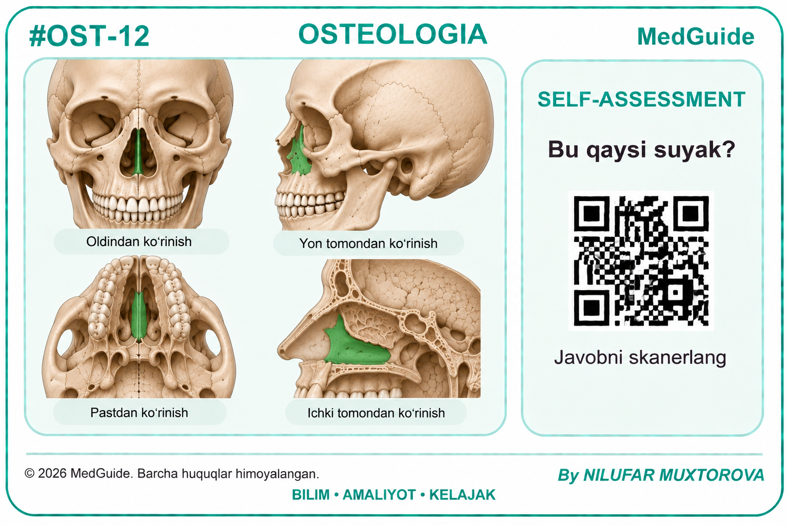
#OST-12: Vomer (Dimog' suyagi / Sanoch)[cite: 1]
- LA: Vomer (Impar)[cite: 1]
- UZ: Dimog' suyagi (toq)[cite: 1]
- EN: Vomer (Unpaired)[cite: 1]
- RU: Сошник (Непарный)[cite: 1]
- TR: Sapan kemiği (Tek)[cite: 1]
Burun to'sig'ining suyak qismini hosil qiluvchi trapetsiyasimon yupqa suyak plastinkasi[cite: 1].
Maxsus yirik teshiklari yo'q, shilliq qavat tomirlari va nervlari o'tadigan mayda teshikchalari bor[cite: 1].

#OST-13: Os palatinum (Tanglay suyagi)[cite: 1]
- LA: Os palatinum (Par)[cite: 1]
- UZ: Tanglay suyagi (juft)[cite: 1]
- EN: Palatine bone (Paired)[cite: 1]
- RU: Небная кость (Парный)[cite: 1]
- TR: Damak kemiği (Çift)[cite: 1]
Lamina horizontalis (Gorizontal plastinka), Lamina perpendicularis (Tik plastinka)[cite: 1].
Canalis palatinus major ➔ Nn. palatini majores va minores[cite: 1].
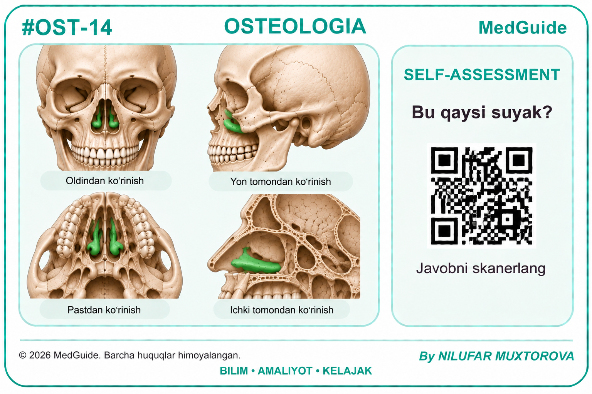
#OST-14: Concha nasalis inferior (Pastki burun chig'anog'i)[cite: 1]
- LA: Concha nasalis inferior (Par)[cite: 1]
- UZ: Pastki burun chig'anog'i (juft)[cite: 1]
- EN: Inferior nasal concha (Paired)[cite: 1]
- RU: Нижняя носовая раковина (Парный)[cite: 1]
- TR: Alt burun istiridyesi (Çift)[cite: 1]
Burun bo'shlig'ining yon devorida joylashgan alohida burmalar shaklidagi suyak[cite: 1].
Maxsus teshikka ega emas, shilliq qavat ostidan havo oqimini isitish va namlash vazifasini bajaradi[cite: 1].
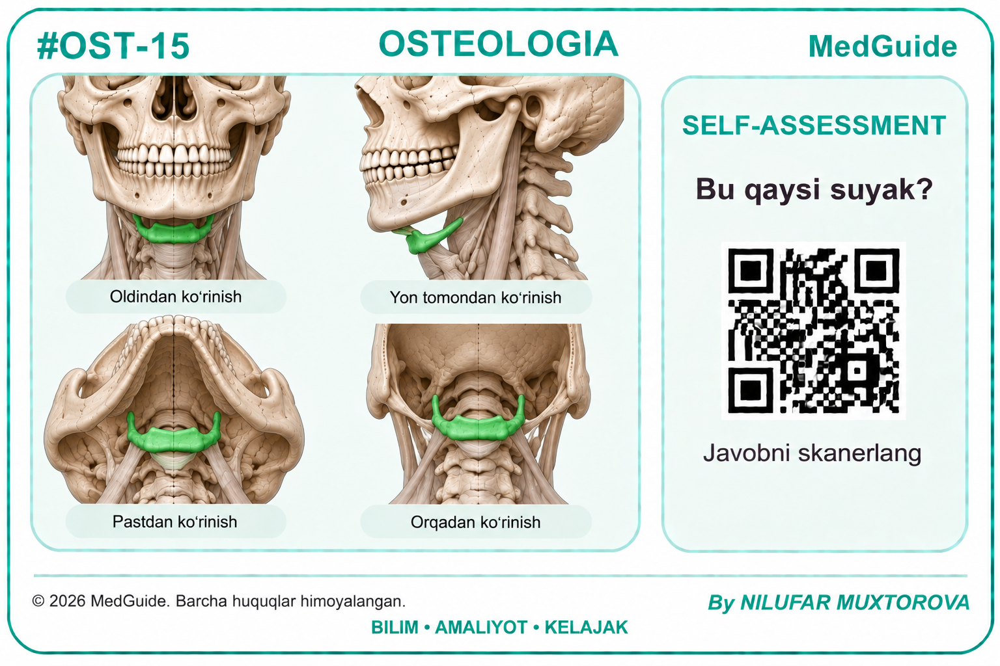
#OST-15: Os hyoideum (Til osti suyagi)[cite: 1]
- LA: Os hyoideum (Impar)[cite: 1]
- UZ: Til osti suyagi (toq)[cite: 1]
- EN: Hyoid bone (Unpaired)[cite: 1]
- RU: Подъязычная кость (Непарный)[cite: 1]
- TR: Dil kemiği (Tek)[cite: 1]
Corpus (Tana), Cornua majora (Katta shoxlar), Cornua minora (Kichik shoxlar)[cite: 1].
Suyak teshiklarga ega emas. Skeletda boshqa suyaklar bilan bevosita bo'g'im orqali birikmaydigan yagona suyak (muskullar va boylamlar orqali osilib turadi)[cite: 1].
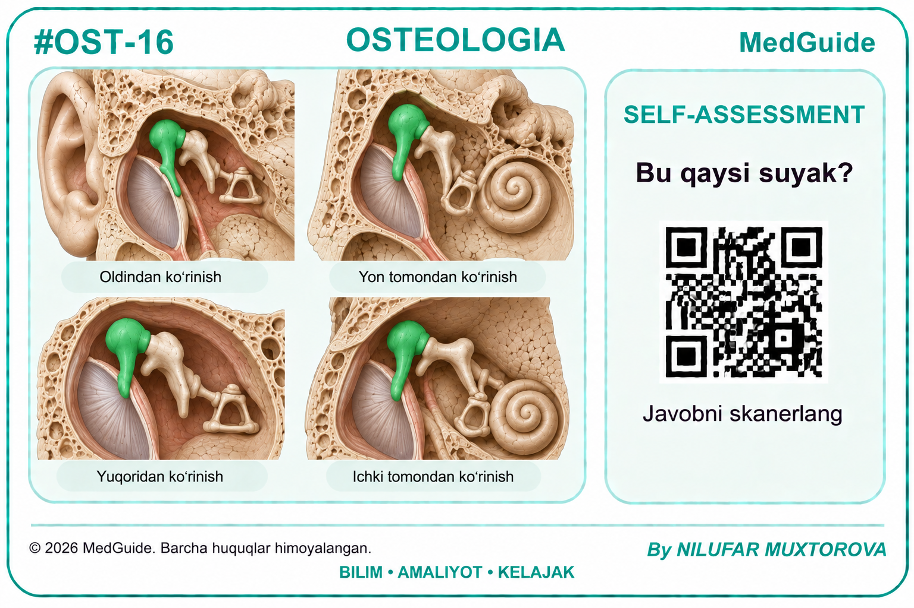
#OST-16: Malleus (Bolg'acha)[cite: 1]
- LA: Malleus (Par)[cite: 1]
- UZ: Bolg'acha (juft)[cite: 1]
- EN: Malleus / Hammer (Paired)[cite: 1]
- RU: Молоточек (Парный)[cite: 1]
- TR: Çekiç kemiği (Çift)[cite: 1]
Caput (Boshchasi), Manubrium (Dastasi), Processus lateralis et anterior[cite: 1].
O'rta quloq bo'shlig'ida joylashgan eshitish suyakchasi; teshiklari yo'q[cite: 1].

#OST-17: Incus (Sandon)[cite: 1]
- LA: Incus (Par)[cite: 1]
- UZ: Sandon (juft)[cite: 1]
- EN: Incus / Anvil (Paired)[cite: 1]
- RU: Наковальня (Парный)[cite: 1]
- TR: Örs kemiği (Çift)[cite: 1]
Corpus (Tana), Crus longum (Uzun oyoq), Crus breve (Qisqa oyoq)[cite: 1].
Bolg'acha va uzangi orasida ko'prik vazifasini bajaruvchi o'rta quloq suyagi[cite: 1].
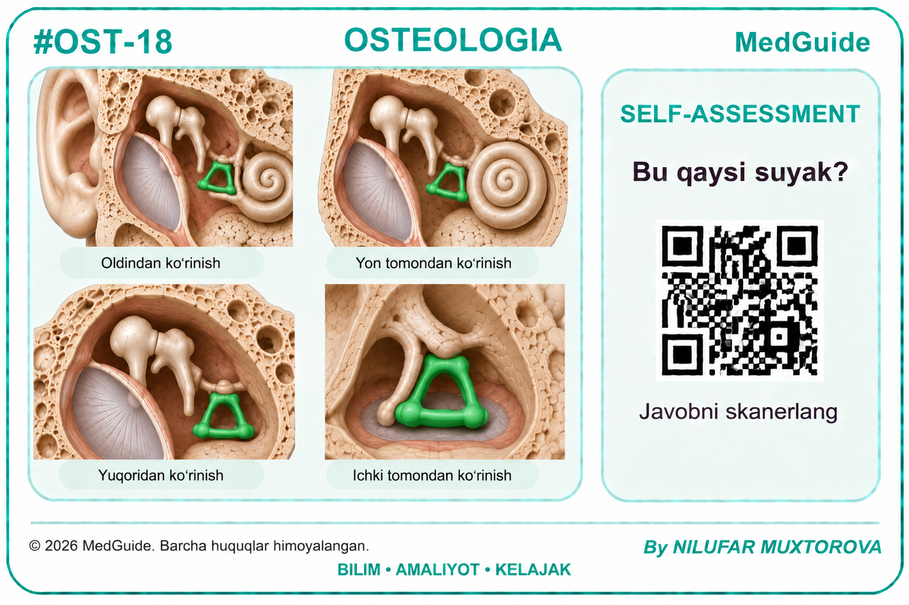
#OST-18: Stapes (Uzangi)[cite: 1]
- LA: Stapes (Par)[cite: 1]
- UZ: Uzangi (juft)[cite: 1]
- EN: Stapes / Stirrup (Paired)[cite: 1]
- RU: Стремя (Парный)[cite: 1]
- TR: Üzengi kemiği (Çift)[cite: 1]
Caput stapedis (Boshchasi), Crus anterius va posterius, Basis stapedis (Asosi / tovoni)[cite: 1].
Oyoqchalari orasida kichik teshikcha bo'ladi. Asosi ichki quloqning oval oynachasiga yopishadi[cite: 1].
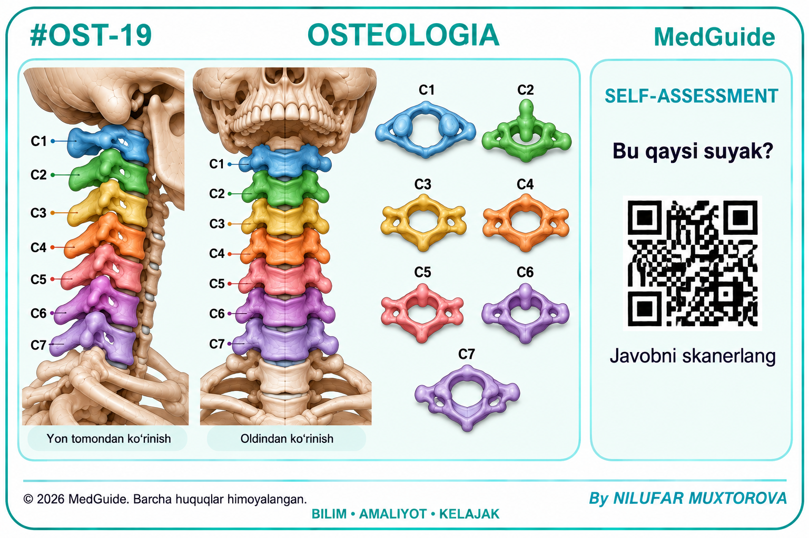
#OST-19: Vertebrae cervicales (Bo'yin umurtqalari)[cite: 1]
- LA: Vertebrae cervicales (C1–C7)[cite: 1]
- UZ: Bo'yin umurtqalari[cite: 1]
- EN: Cervical vertebrae[cite: 1]
- RU: Шейные позвонки[cite: 1]
- TR: Boyun omurlari[cite: 1]
Corpus, arcus, foramen vertebrale; Processus spinosus, transversus (teshigi bor: foramen processus transversi). Maxsus umurtqalar: C1 – Atlas, C2 – Axis (Dens)[cite: 1].
Foramen processus transversi ➔ A. et v. vertebralis; Foramen vertebrale kanali ➔ Orqa miya (Medulla spinalis) va uning qobig'i[cite: 1].

#OST-20: Vertebrae thoracicae (Ko'krak umurtqalari)[cite: 1]
- LA: Vertebrae thoracicae (Th1–Th12)[cite: 1]
- UZ: Ko'krak umurtqalari[cite: 1]
- EN: Thoracic vertebrae[cite: 1]
- RU: Грудные позвонки[cite: 1]
- TR: Sırt omurları[cite: 1]
Fovea costalis superior et inferior (Qovurg'a chuqurchalari), Fovea costalis processus transversi (Ko'ndalang o'simta chuqurchasi), Uzun, pastga egilgan processus spinosus (qiltiriq o'simtalar)[cite: 1].
Foramen vertebrale ➔ Orqa miya va uning ildizchalari; Intervertebral teshiklar ➔ Nn. spinales (Orqa miya nervlari)[cite: 1].
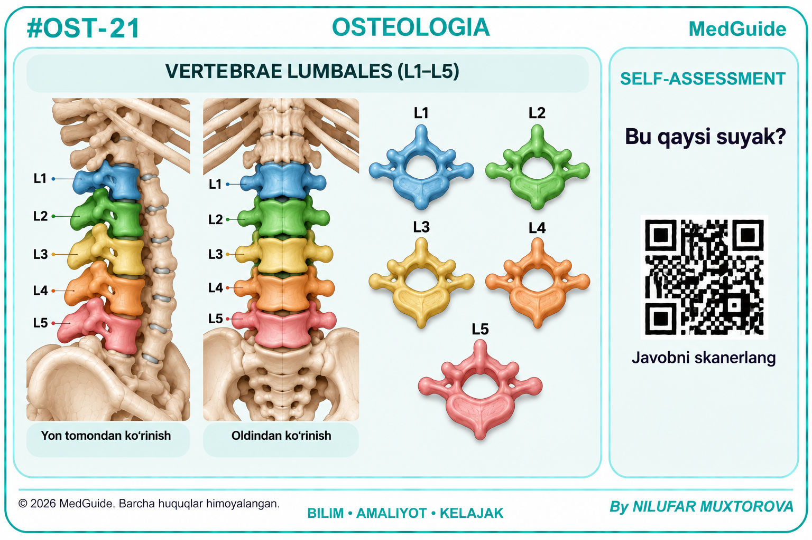
#OST-21: Vertebrae lumbales (Bel umurtqalari)[cite: 1]
- LA: Vertebrae lumbales (L1–L5)[cite: 1]
- UZ: Bel umurtqalari[cite: 1]
- EN: Lumbar vertebrae[cite: 1]
- RU: Поясничные позвонки[cite: 1]
- TR: Bel omurları[cite: 1]
Katta tana (Corpus vertebrae), Qisqa va keng processus spinosus, Processus accessorius va mamillaris[cite: 1].
Intervertebral teshiklar ➔ N. ischiadicus tarkibiga kiruvchi nerv ildizchalari (L4-S3)[cite: 1].

#OST-22: Os sacrum (Dumg'aza suyagi)[cite: 1]
- LA: Os sacrum (Impar)[cite: 1]
- UZ: Dumg'aza suyagi (5 ta umurtqa qo'shilishidan hosil bo'lgan)[cite: 1]
- EN: Sacrum (Unpaired)[cite: 1]
- RU: Крестец (Непарный)[cite: 1]
- TR: Sağrı kemiği (Tek)[cite: 1]
Basis ossis sacri (Asosi), Apex (Cho'qqisi), Facies pelvina va dorsalis, Lineae transversae, crista sacralis mediana[cite: 1].
Foramina sacralia anteriora et posteriora ➔ Qon tomirlari va dumg'aza nervlari shoxlari (rami anteriores et posteriores)[cite: 1].
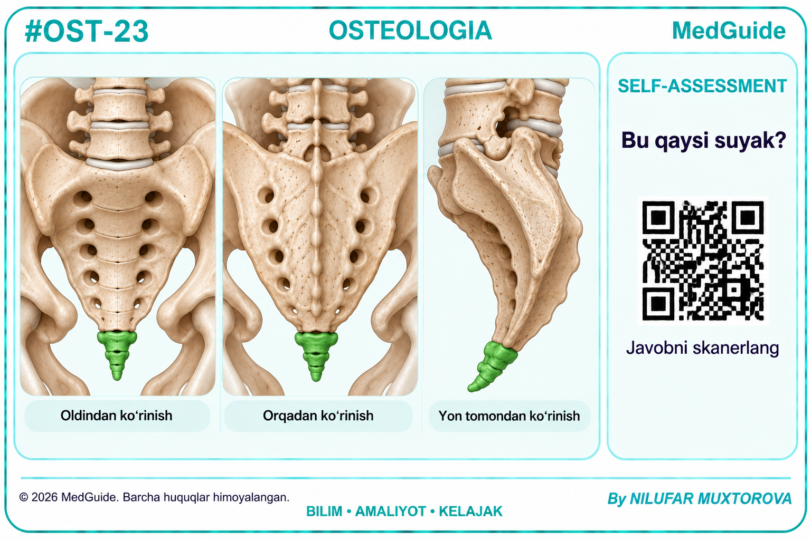
#OST-23: Os coccygis (Dum suyagi)[cite: 1]
- LA: Os coccygis (Impar)[cite: 1]
- UZ: Dum suyagi (4–5 ta rudiment umurtqa qo'shilishi)[cite: 1]
- EN: Coccyx (Unpaired)[cite: 1]
- RU: Копчик (Непарный)[cite: 1]
- TR: Kuyruk sokumu (Tek)[cite: 1]
Cornua coccygea (Dum suyagi shoxchalari), Kichik uchburchak shaklidagi rudimentar suyak[cite: 1].
Maxsus yirik teshiklari yo'q, dumg'aza nervlarining oxirgi tolalari tarqaladi[cite: 1].

#OST-24: Sternum (To'sh suyagi)[cite: 1]
- LA: Sternum (Impar)[cite: 1]
- UZ: To'sh suyagi (toq)[cite: 1]
- EN: Sternum (Unpaired)[cite: 1]
- RU: Грудина (Непарный)[cite: 1]
- TR: Göğüs kemiği (Tek)[cite: 1]
Manubrium sterni (To'sh dastasi), Corpus sterni (To'sh tanasi), Processus xiphoideus (Xanjarismon o'simta)[cite: 1].
Suyak teshiklarga ega emas. Orqa yuzasida ko'ks oralig'i organlari va yirik tomirlar joylashadi[cite: 1].
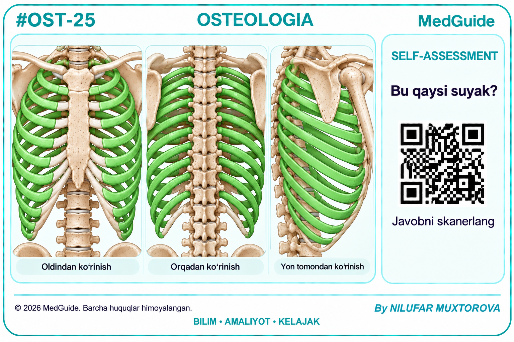
#OST-25: Costae (Qovurg'alar)[cite: 1]
- LA: Costae (I–XII, juft)[cite: 1]
- UZ: Qovurg'alar (juft)[cite: 1]
- EN: Ribs (Paired)[cite: 1]
- RU: Ребра (Парный)[cite: 1]
- TR: Kaburgalar (Çift)[cite: 1]
Caput costae (Boshchasi), Collum (Bo'yni), Tuberculum (Do'ngchasi), Corpus costae (Sulcus costae — qovurg'a egatigacha). Chin qovurg'alar (1-7), soxta qovurg'alar (8-10), suzuvchi qovurg'alar (11-12)[cite: 1].
Sulcus costae ostidan o'tadi ➔ N. intercostalis va V. et A. intercostales[cite: 1].

#OST-26: Clavicula (O'mrov suyagi)[cite: 1]
- LA: Clavicula (Par)[cite: 1]
- UZ: O'mrov suyagi (juft)[cite: 1]
- EN: Clavicle (Paired)[cite: 1]
- RU: Ключица (Парный)[cite: 1]
- TR: Köprücük kemiği (Çift)[cite: 1]
Extremitas sternalis (To'sh uchi), Corpus claviculae (Tana), Extremitas acromialis (Akromial uch)[cite: 1].
Maxsus teshigi yo'q. Ostidan pleksus brachialissning yirik tomir-nerv tutami o'tadi[cite: 1].

#OST-27: Scapula (Kurak suyagi)[cite: 1]
- LA: Scapula (Par)[cite: 1]
- UZ: Kurak suyagi (juft)[cite: 1]
- EN: Scapula (Paired)[cite: 1]
- RU: Лопатка (Парный)[cite: 1]
- TR: Kürek kemiği (Çift)[cite: 1]
Facies costalis va dorsalis (Spina scapulae), Processus coracoideus (Qarg'asimon o'simta), Cavitas glenoidalis (Yelka bo'g'im yuzasi) va Acromion[cite: 1].
Incisura scapulae ustidagi yopiq teshikchadan ➔ N. suprascapularis o'tadi[cite: 1].
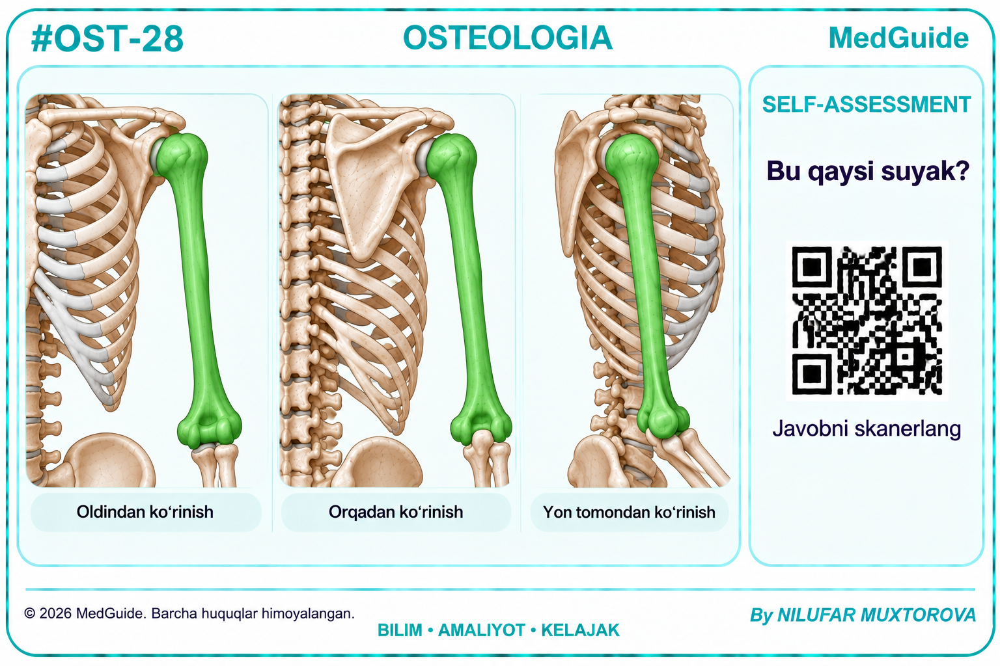
#OST-28: Humerus (Yelka suyagi)[cite: 1]
- LA: Humerus (Par)[cite: 1]
- UZ: Yelka suyagi (juft)[cite: 1]
- EN: Humerus (Paired)[cite: 1]
- RU: Плечевая кость (Парный)[cite: 1]
- TR: Kol kemiği (Çift)[cite: 1]
Caput humeri (Boshchasi), Collum anatomicum va chirurgicum, Corpus humeri (Sulcus nervi radialis), Condylus humeri (Trochlea va capitulum)[cite: 1].
Sulcus n. radialis o'tish sohasi ➔ N. radialis (Radial nerv); Fossa olecrani va fossa coronoidea[cite: 1].
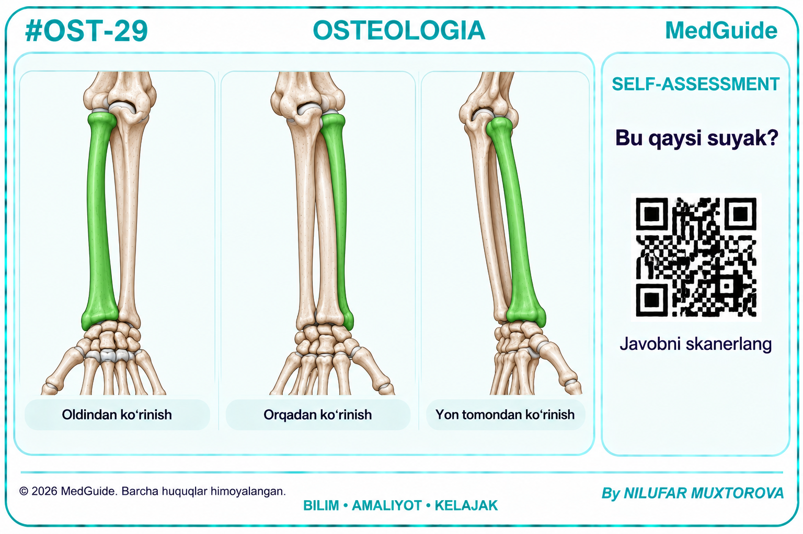
#OST-29: Radius (Bilak suyagi)[cite: 1]
- LA: Radius (Par)[cite: 1]
- UZ: Bilak suyagi (tashqi / lateral bilak suyagi) (juft)[cite: 1]
- EN: Radius (Paired)[cite: 1]
- RU: Лучевая кость (Парный)[cite: 1]
- TR: Döner kemik (Çift)[cite: 1]
Caput radii (Boshchasi), Circumferentia articularis, Tuberositas radii (Do'ngchasi), Processus styloideus radii (Shoxsimon o'simta)[cite: 1].
Suyak tanasida yirik teshik yo'q, distal qismida bilak arteriyasi va nerv shoxchalari o'tadi[cite: 1].
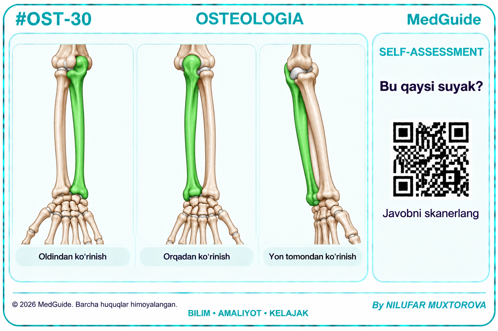
#OST-30: Ulna (Tirsak suyagi)[cite: 1]
- LA: Ulna (Par)[cite: 1]
- UZ: Tirsak suyagi (medial bilak suyagi) (juft)[cite: 1]
- EN: Ulna (Paired)[cite: 1]
- RU: Локтевая кость (Парный)[cite: 1]
- TR: Dirsek kemiği (Çift)[cite: 1]
Olecranon (Tirsak o'simtasi) va Processus coronoideus, Incisura trochlearis, Caput ulnae va Processus styloideus ulnae[cite: 1].
Foramen nutricium (oziqlantiruvchi teshik). Pastki qismida N. ulnaris yaqin joylashadi[cite: 1].

#OST-31: Ossa carpi (Kaft usti suyaklari)[cite: 1]
- LA: Ossa carpi (8 tadan 2 ta = 16 ta)[cite: 1]
- UZ: Kaft usti suyaklari (juft)[cite: 1]
- EN: Carpal bones (Paired)[cite: 1]
- RU: Кости запястья (Парный)[cite: 1]
- TR: El bilek kemiği (Çift)[cite: 1]
Proksimal qator: Os scaphoideum, lunatum, triquetrum, pisiforme; Distal qator: Os trapezoideum, trapezium, capitatum, hamatum[cite: 1].
Canalis carpi (Kaft usti kanali) ➔ N. medianus (O'rta nerv) va barmoq bukuvchi paylar o'tadi[cite: 1].
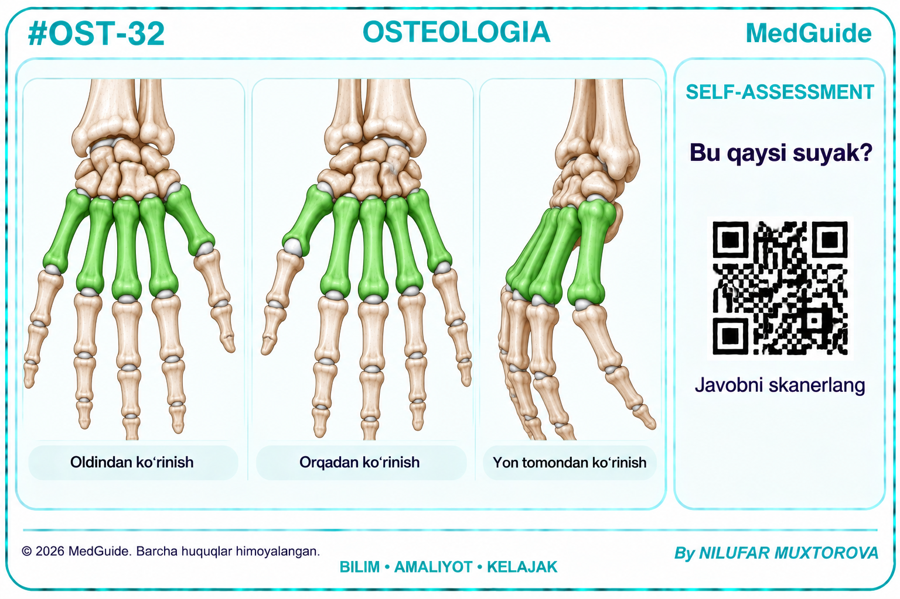
#OST-32: Ossa metacarpi (Kaft suyaklari)[cite: 1]
- LA: Ossa metacarpi (I–V, juft)[cite: 1]
- UZ: Kaft suyaklari (juft)[cite: 1]
- EN: Metacarpals (Paired)[cite: 1]
- RU: Пястные кости (Парный)[cite: 1]
- TR: El tarak kemiği (Çift)[cite: 1]
Basis (Asosi), Corpus (Tanasi), Caput (Boshchasi). Qisqa naysimon suyaklar turkumiga kiradi[cite: 1].
Oralig'idagi bo'shliqlardan kaft arteriyalari yoyi va nerv shoxchalari o'tadi[cite: 1].

#OST-33: Phalanges digitorium manus (Barmoq falangalari)[cite: 1]
- LA: Phalanges digitorum (14 tadan 2 ta)[cite: 1]
- UZ: Barmoq falangalari (juft)[cite: 1]
- EN: Phalanges of fingers (Paired)[cite: 1]
- RU: Фаланги пальцев кисти (Парный)[cite: 1]
- TR: Parmak kemiği (Çift)[cite: 1]
Phalanx proximalis, media, distalis (I-barmoqda media yo'q). Har bir falanga asos, tana va boshchadan iborat[cite: 1].
Maxsus yirik teshiklari yo'q. Tomir va nervlar yon tomonlaridan o'tadi[cite: 1].
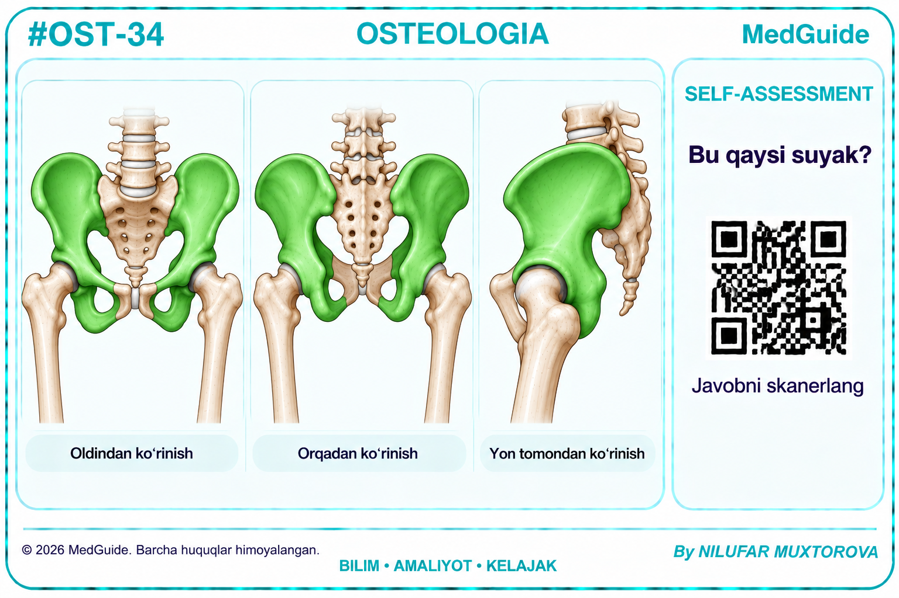
#OST-34: Os coxae (Chanoq suyagi)[cite: 1]
- LA: Os coxae (Par)[cite: 1]
- UZ: Chanoq suyagi (juft)[cite: 1]
- EN: Hip bone / Innominate bone (Paired)[cite: 1]
- RU: Тазовая кость (Парный)[cite: 1]
- TR: Kalça kemiği (Çift)[cite: 1]
Os ilium (Yonbosh suyagi), Os ischii (O'tirgich suyagi), Os pubis (Qov suyagi) — Acetabulum va Foramen obturatorium[cite: 1].
Foramen obturatorium ➔ A., v. va n. obturatorius; Incisura ischiadica major et minor ➔ N. ischiadicus va qon tomirlari[cite: 1].

#OST-35: Femur (Son suyagi)[cite: 1]
- LA: Femur (Par)[cite: 1]
- UZ: Son suyagi (juft)[cite: 1]
- EN: Femur / Thigh bone (Paired)[cite: 1]
- RU: Бедренная кость (Парный)[cite: 1]
- TR: Uyluk kemiği (Çift)[cite: 1]
Caput femoris (Boshchasi), Collum femoris, Trochanter major va minor (Katta va kichik qo'shimcha do'nglar), Condylus medialis va lateralis[cite: 1].
Fovea capitis femoris (boshcha o'sig'i tomiri); Orqa qismida Linea aspera; pastki qismida N. ischiadicus yaqin o'tadi[cite: 1].
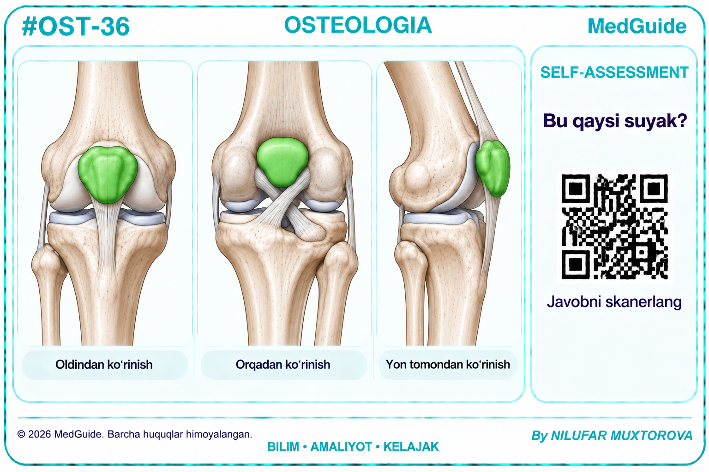
#OST-36: Patella (Tizza qopqog'i)[cite: 1]
- LA: Patella (Par)[cite: 1]
- UZ: Tizza qopqog'i (juft)[cite: 1]
- EN: Patella / Kneecap (Paired)[cite: 1]
- RU: Надколенник (Парный)[cite: 1]
- TR: Diz kapağı (Çift)[cite: 1]
Basis patellae (Asosi), Apex patellae (Cho'qqisi). Tana organizmdagi eng yirik sesamoid suyak hisoblanadi[cite: 1].
Suyak teshiklarga ega emas. M. quadriceps femoris payi ichida rivojlanadi[cite: 1].
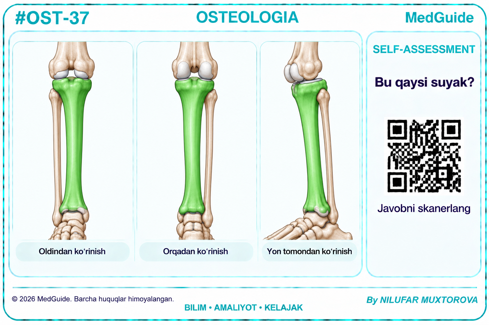
#OST-37: Tibia (Katta boldir suyagi)[cite: 1]
- LA: Tibia (Par)[cite: 1]
- UZ: Katta boldir suyagi (juft)[cite: 1]
- EN: Tibia / Shin bone (Paired)[cite: 1]
- RU: Большеберцовая кость (Парный)[cite: 1]
- TR: Kaval kemiği (Çift)[cite: 1]
Condylus medialis va lateralis (Tizza bo'g'imi yuzasi), Tuberositas tibiae (Do'ngchasi), Malleolus medialis (Medial to'piq)[cite: 1].
Orqa yuzasida oziqlantiruvchi yirik teshik. N. tibialis orqa qismidan o'tadi[cite: 1].

#OST-38: Fibula (Kichik boldir suyagi)[cite: 1]
- LA: Fibula (Par)[cite: 1]
- UZ: Kichik boldir suyagi (juft)[cite: 1]
- EN: Fibula / Calf bone (Paired)[cite: 1]
- RU: Малоберцовая кость (Парный)[cite: 1]
- TR: Kamış kemiği (Çift)[cite: 1]
Caput fibulae (Boshchasi), Corpus fibulae (Tanasi), Malleolus lateralis (Yon to'piq)[cite: 1].
Collum fibulae sohasi orqali ➔ N. fibularis communis (Umumiy kichik boldir nervi) o'tadi[cite: 1].
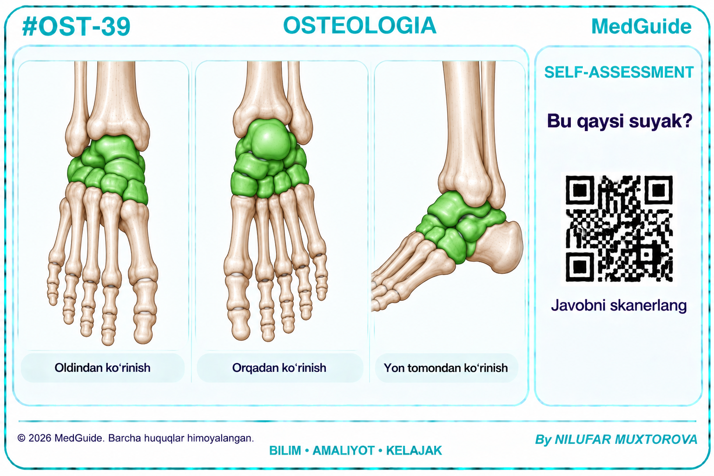
#OST-39: Ossa tarsi (Oyoq to'piq va tarsus suyaklari)[cite: 1]
- LA: Ossa tarsi (7 tadan 2 ta = 14 ta)[cite: 1]
- UZ: Oyoq to'piq / tarsus suyaklari (juft)[cite: 1]
- EN: Tarsal bones (Paired)[cite: 1]
- RU: Кости предплюсны (Парный)[cite: 1]
- TR: Ayak bilek kemiği (Çift)[cite: 1]
Talus (Oshiq), Calcaneus (Tovon), Os naviculari, os cuboideum va ossa cuneiformia (I, II, III)[cite: 1].
Canalis tarsi ➔ Tomir va nerv shoxchalari o'tadi[cite: 1].

#OST-40: Ossa metatarsi (Oyoq kafti suyaklari)[cite: 1]
- LA: Ossa metatarsi (I–V, juft)[cite: 1]
- UZ: Oyoq kafti suyaklari (juft)[cite: 1]
- EN: Metatarsal bones (Paired)[cite: 1]
- RU: Плюсневые кости (Парный)[cite: 1]
- TR: Ayak tarak kemiği (Çift)[cite: 1]
Basis (Asosi), Corpus (Tanasi), Caput (Boshchasi). Uzun naysimon suyaklar tuzilishiga ega kichik suyaklar[cite: 1].
Oyoq tagi va usti arteriyalari hamda tarmoq nervlari o'tish bo'shliqlari mavjud[cite: 1].
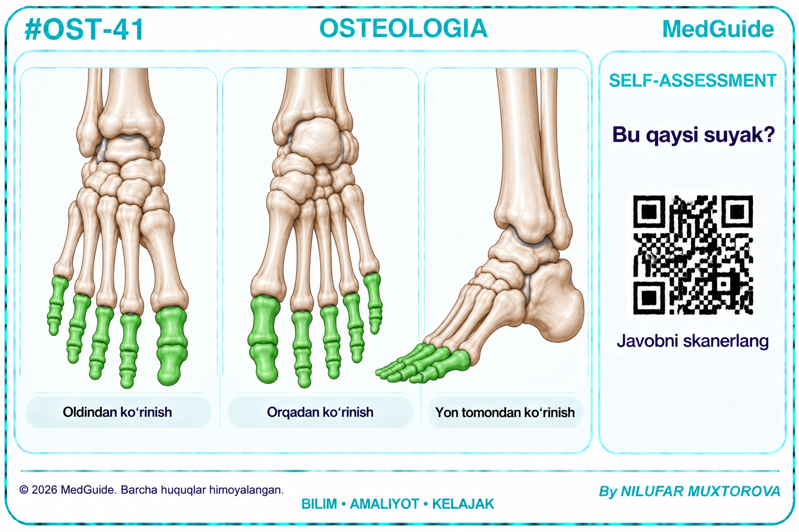
#OST-41: Phalanges digitorium pedis (Oyoq barmoq falangalari)[cite: 1]
- LA: Phalanges digitorum pedis (14 tadan 2 ta)[cite: 1]
- UZ: Oyoq barmoq falangalari (juft)[cite: 1]
- EN: Phalanges of toes (Paired)[cite: 1]
- RU: Фаланги пальцев стопы (Парный)[cite: 1]
- TR: Parmak kemikleri (Çift)[cite: 1]
Phalanx proximalis, media, distalis (Bosh barmoqda faqat 2 ta falanga bor)[cite: 1].
Maxsus teshiklari yo'q, barmoq nerv-tomir tutamlari yon tomonlardan keladi[cite: 1].

#OST-42: Costae verae (Chin qovurg'alar)[cite: 1]
- LA: Costae verae (I–VII)[cite: 1]
- UZ: Chin qovurg'alar[cite: 1]
- EN: True ribs[cite: 1]
- RU: Истинные ребра[cite: 1]
- TR: Gerçek kaburgalar[cite: 1]
Orqa qismi umurtqa pog'onasiga, oldingi qismi esa to'g'ridan-to'g'ri to'sh suyagiga (sternum) birikadi. Jami 7 juft bo'lib, ko'krak qafasining mustahkamligini ta'minlaydi[cite: 1].
Qovurg'a tog'aylari orqali to'sh suyagiga qo'shiladi. Ostidan qovurg'a oralig'i nerv-tomir tutami o'tadi[cite: 1].
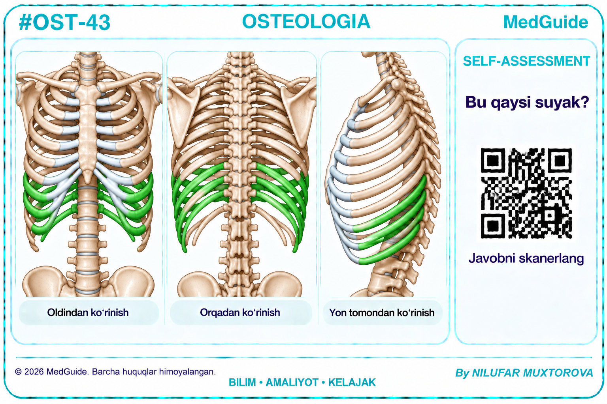
#OST-43: Costae spuriae (Soxta qovurg'alar)[cite: 1]
- LA: Costae spuriae (VIII–X)[cite: 1]
- UZ: Soxta qovurg'alar[cite: 1]
- EN: False ribs[cite: 1]
- RU: Ложные ребра[cite: 1]
- TR: Yalancı kaburgalar[cite: 1]
VIII, IX va X qovurg'alar kiradi. Ular bevosita to'sh suyagiga birikmaydi, balki o'zidan yuqoridagi qovurg'aning tog'ayiga qo'shilib boradi (arcus costalis — qovurg'a ravoigini hosil qiladi)[cite: 1].
Tog'aylararo birikmalar orqali yagona tog'ay yoyiga birlashadi[cite: 1].
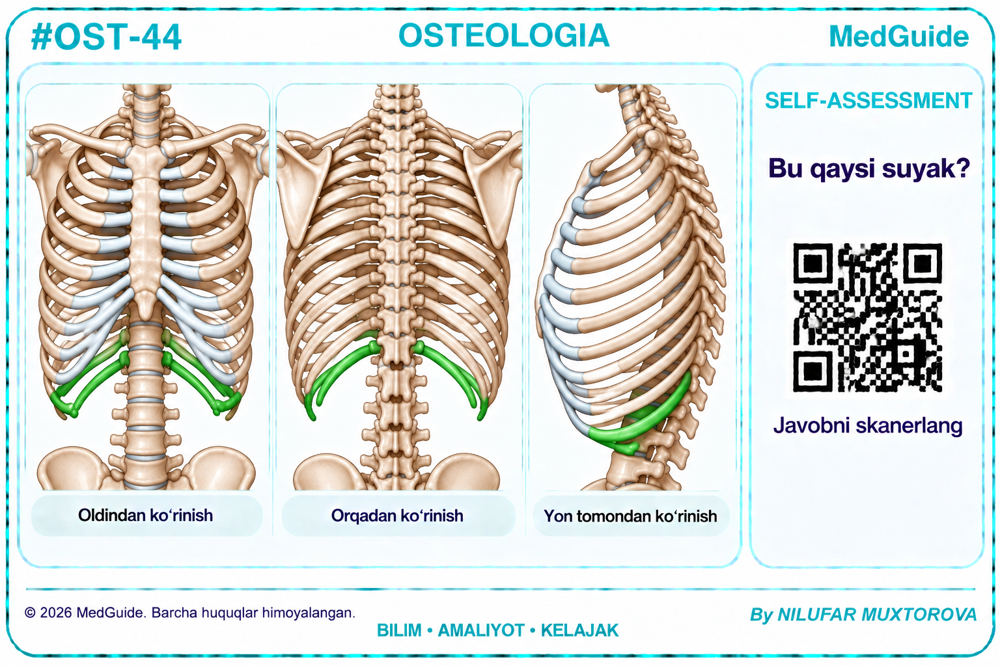
#OST-44: Costae fluctuantes (Suzuvchi / Chalg'uvchi qovurg'alar)[cite: 1]
- LA: Costae fluctuantes (XI–XII)[cite: 1]
- UZ: Sudraluvchi yoki suzuvchi (chalg'uvchi) qovurg'alar[cite: 1]
- EN: Floating ribs[cite: 1]
- RU: Колеблющиеся ребра[cite: 1]
- TR: Yüzen kaburgalar[cite: 1]
XI va XII qovurg'alar. Ularning oldingi uchlari erkin bo'lib, hech qanday suyak yoki tog'ayga birikmaydi, qorin bo'shlig'i yumshoq to'qimalarida tugaydi[cite: 1].
Faqat umurtqa pog'onasining ko'krak qismiga orqa tomonidan birikadi[cite: 1].
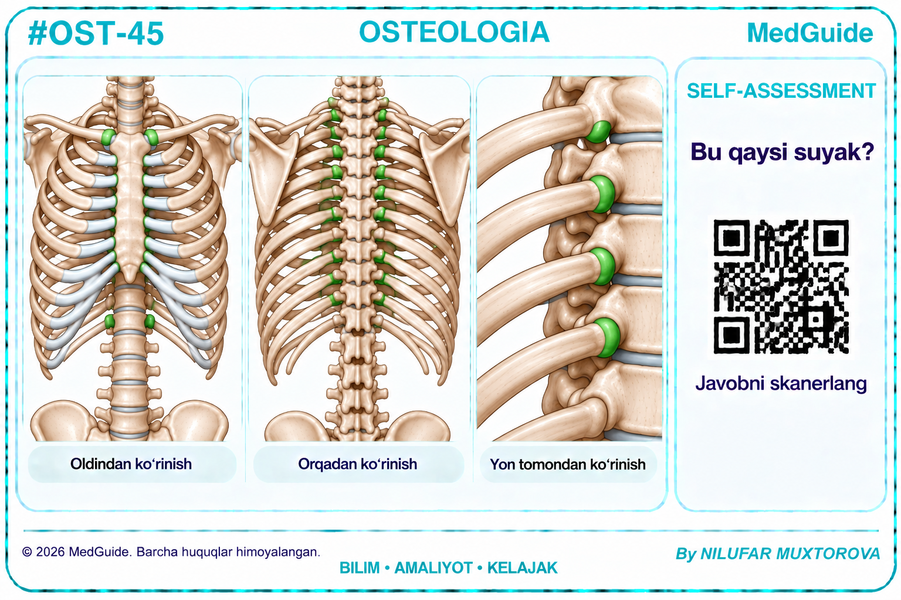
#OST-45: Caput costae (Qovurg'a boshchasi)[cite: 1]
- LA: Caput costae[cite: 1]
- UZ: Qovurg'a boshchasi[cite: 1]
- EN: Head of rib[cite: 1]
- RU: Головка ребра[cite: 1]
- TR: Kaburga başı[cite: 1]
Qovurg'aning umurtqa bilan tutashadigan orqa qismi. Yuzasida umurtqa tanasi chuqurchasiga mos keluvchi bo'g'im yuzasi (facies articularis capitis costae) mavjud[cite: 1].
Boshcha Cresta capitis costae (boshcha qirrasi) yordamida ikkita yuzachaga bo'linadi[cite: 1].
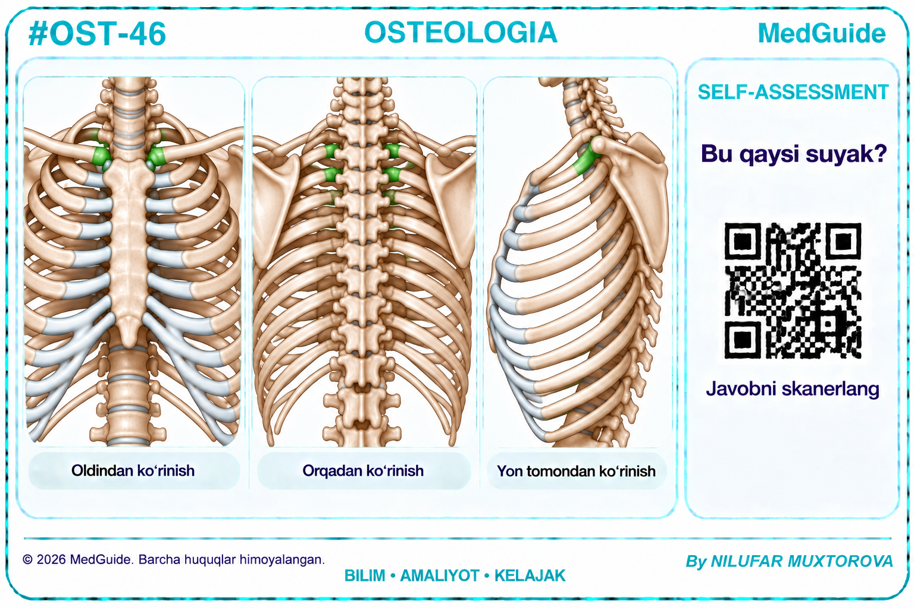
#OST-46: Collum costae (Qovurg'a bo'yni)[cite: 1]
- LA: Collum costae[cite: 1]
- UZ: Qovurg'a bo'yni[cite: 1]
- EN: Neck of rib[cite: 1]
- RU: Шейка ребра[cite: 1]
- TR: Kaburga boynu[cite: 1]
Boshcha va do'ngcha orasidagi tor qism. Ustki qirrasida tizma (crista colli costae) joylashgan bo'lib, unga ligamentlar birikadi[cite: 1].
Ligamentlar orqali qo'shni umurtqaning ko'ndalang o'simtasiga mustahkamlanadi[cite: 1].

#OST-47: Tuberculum costae (Qovurg'a do'ngchasi)[cite: 1]
- LA: Tuberculum costae[cite: 1]
- UZ: Qovurg'a do'ngchasi[cite: 1]
- EN: Tubercle of rib[cite: 1]
- RU: Бугорок ребра[cite: 1]
- TR: Kaburga kabartısı[cite: 1]
Bo'yin va tana chegarasidagi orqa yuzada joylashgan do'ngcha. Unda umurtqaning ko'ndalang o'simtasi bilan bo'g'im hosil qiluvchi yuzacha bor[cite: 1].
Qovurg'aning umurtqa bilan harakatchan birikishini ta'minlaydi[cite: 1].

#OST-48: Corpus costae (Qovurg'a tanasi)[cite: 1]
- LA: Corpus costae[cite: 1]
- UZ: Qovurg'a tanasi[cite: 1]
- EN: Body / Shaft of rib[cite: 1]
- RU: Тело ребра[cite: 1]
- TR: Kaburga gövdesi[cite: 1]
Qovurg'aning eng uzun, yassi va egilgan qismi. Ichki yuzasining pastki qismida qovurg'a egati (sulcus costae) o'tadi[cite: 1].
Sulcus costae ichida qovurg'aroq arteriyasi, venasi va nervi joylashadi[cite: 1].
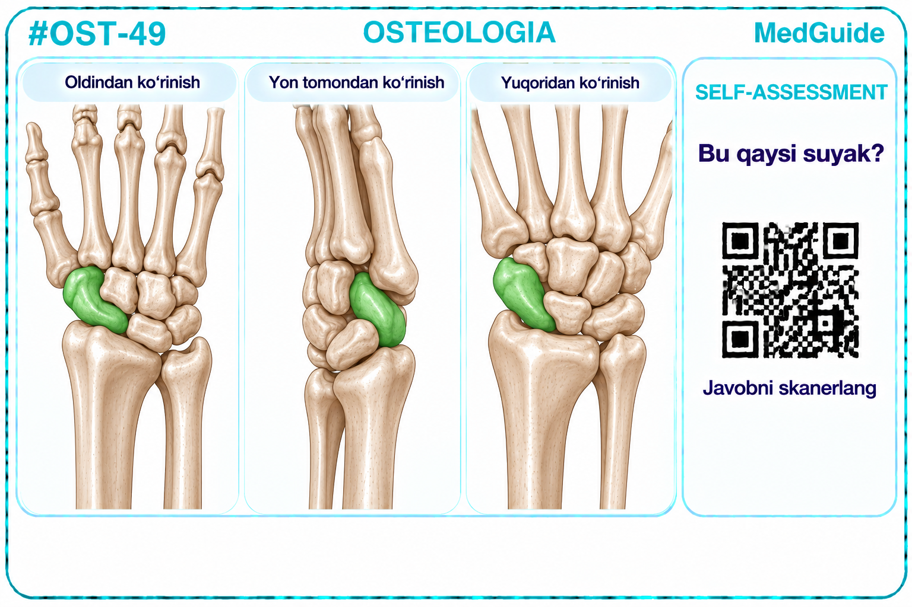
#OST-49: Os scaphoideum (Qayiqsimon suyak)[cite: 1]
- LA: Os scaphoideum (Carpeum)[cite: 1]
- UZ: Qayiqsimon suyak (kaft usti)[cite: 1]
- EN: Scaphoid bone[cite: 1]
- RU: Ладьевидная кость[cite: 1]
- TR: Skafoid kemik[cite: 1]
Kaft usti proksimal qatorining tashqi (lateral) qismida joylashgan suyak. Shakli qayiqqa o'xshaydi, do'ngchasi (tuberculum ossis scaphoidei) bor[cite: 1].
Radius suyagining pastki uchi bilan bo'g'im hosil qiladi[cite: 1].

#OST-50: Os lunatum (Yarimoysimon suyak)[cite: 1]
- LA: Os lunatum[cite: 1]
- UZ: Yarimoysimon suyak[cite: 1]
- EN: Lunate bone[cite: 1]
- RU: Полулунная кость[cite: 1]
- TR: Lunat kemik[cite: 1]
Kaft usti proksimal qatorining markaziy qismida joylashgan. Yarim oy shakliga ega[cite: 1].
Radius va boshqa kaft usti suyaklari bilan tutashadi[cite: 1].
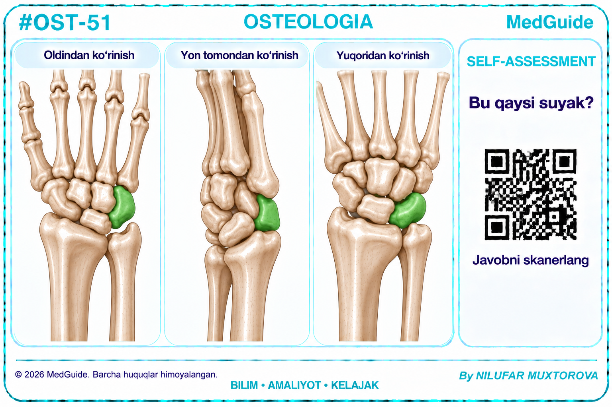
#OST-51: Os triquetrum (Uchqir suyak)[cite: 1]
- LA: Os triquetrum[cite: 1]
- UZ: Uchqir suyak[cite: 1]
- EN: Triquetral bone[cite: 1]
- RU: Трехгранная кость[cite: 1]
- TR: Triquetrum kemik[cite: 1]
Piramida shaklidagi kaft usti suyagi. Proksimal qatorning medial (ichki) qismida joylashgan[cite: 1].
Noksimon suyak (os pisiforme) bilan oldingi yuzasidan tutashadi[cite: 1].
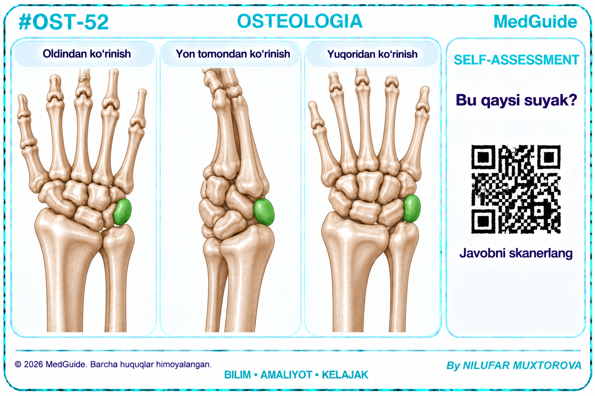
#OST-52: Os pisiforme (Nuxotsimon suyak)[cite: 1]
- LA: Os pisiforme[cite: 1]
- UZ: Nuxotsimon suyak[cite: 1]
- EN: Pisiform bone[cite: 1]
- RU: Гороховидная кость[cite: 1]
- TR: Pisiform kemik[cite: 1]
No'xatdek keladigan kichik sesamoid suyak. Os triquetrum ustida joylashgan bo'lib, flexor carpi ulnaris payi ichida rivojlanadi[cite: 1].
Pay uchun blok vazifasini bajarib, bilak bukuvchi muskullar kuchini oshiradi[cite: 1].
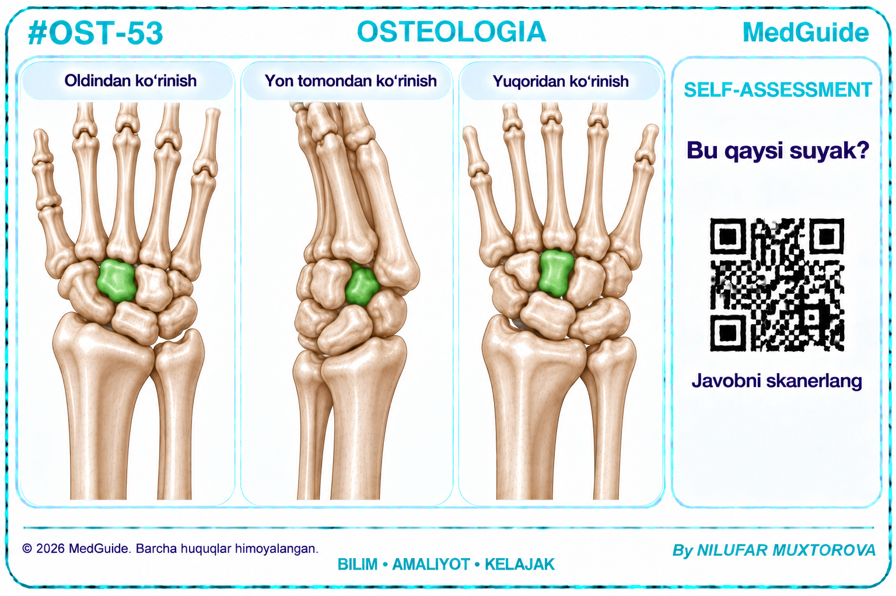
#OST-53: Os trapezoideum (Trapetsiyasimon kichik suyak)[cite: 1]
- LA: Os trapezoideum[cite: 1]
- UZ: Kichik trapetsiyasimon suyak[cite: 1]
- EN: Trapezoid bone[cite: 1]
- RU: Трапециевидная кость[cite: 1]
- TR: Trapezoid kemik[cite: 1]
Kaft usti distal qatorining ikkinchi suyagi. Kichik to'rtburchak shaklga ega[cite: 1].
II-kaft suyagi (os metacarpale II) asosi bilan tutashadi[cite: 1].
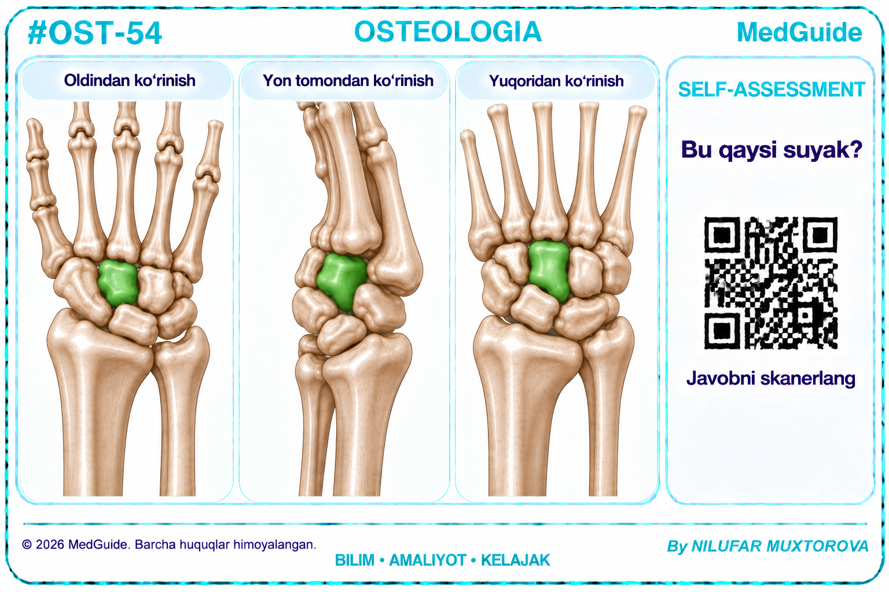
#OST-54: Os capitatum (Boshchali suyak)[cite: 1]
- LA: Os capitatum[cite: 1]
- UZ: Boshchali suyak[cite: 1]
- EN: Capitate bone[cite: 1]
- RU: Головчатая кость[cite: 1]
- TR: Kapitat kemik[cite: 1]
Kaft usti suyaklarining eng yirigi. O'ziga xos boshchaga ega bo'lib, markazda joylashadi[cite: 1].
Atrofidagi deyarli barcha kaft usti va III-kaft suyagi bilan bo'g'im hosil qiladi[cite: 1].
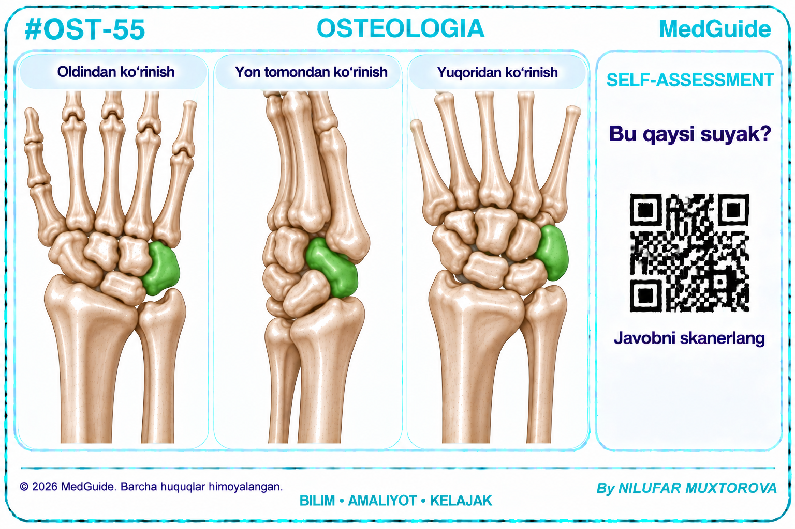
#OST-55: Os hamatum (Ilmoqli suyak)[cite: 1]
- LA: Os hamatum[cite: 1]
- UZ: Ilmoqli suyak[cite: 1]
- EN: Hamate bone[cite: 1]
- RU: Крючковидная кость[cite: 1]
- TR: Hamat kemik[cite: 1]
Distal qatorning medial qismida joylashgan suyak. Pastki-old yuzasida o'ziga xos ilmoq o'simtasi (hamulus ossis hamati) mavjud[cite: 1].
Ilmoq qismi kaft usti kanalining (Canalis carpi) lateral devorini hosil qilishda qatnashadi[cite: 1].

#OST-56: Talus (Oshiq suyagi)[cite: 1]
- LA: Talus[cite: 1]
- UZ: Oshiq suyagi (oyoq to'piq)[cite: 1]
- EN: Talus / Ankle bone[cite: 1]
- RU: Таранная кость[cite: 1]
- TR: Aşık kemiği[cite: 1]
Oyoq to'piq qismining eng yuqori suyagi. Trochlea tali (oshiq g'altagi) orqali katta va kichik boldir suyaklari bilan tizza-to'piq bo'g'imini hosil qiladi[cite: 1].
Suyak yuzasining katta qismi bo'g'im tog'aylari bilan qoplanganligi sababli, qon tomirlar kirish sohasi cheklangan[cite: 1].

#OST-57: Calcaneus (Tovon suyagi)[cite: 1]
- LA: Calcaneus[cite: 1]
- UZ: Tovon suyagi[cite: 1]
- EN: Calcaneus / Heel bone[cite: 1]
- RU: Пяточная кость[cite: 1]
- TR: Topuk kemiği[cite: 1]
Oyoq tarsus suyaklarining eng yirigi. Orqa qismida tovon do'ngligi (tuber calcanei) mavjud bo'lib, unga Achill payi birikadi[cite: 1].
Tananing butun og'irligini yerga uzatuvchi asosiy tayanch vazifasini bajaradi[cite: 1].

#OST-58: Ossa sesamoidea manus (Qo'l kafti sesamoid suyaklari)[cite: 1]
- LA: Ossa sesamoidea manus[cite: 1]
- UZ: Qo'l kafti sesamoid suyaklari[cite: 1]
- EN: Hand sesamoid bones[cite: 1]
- RU: Сесамовидные кости кисти[cite: 1]
- TR: El sesamoid kemikleri[cite: 1]
Muskul paylari orasida joylashgan kichik qo'shimcha suyakchalar. Asosan I-barmoq (bosh barmoq) kaft-falanga bo'g'imi sohasida doimiy uchraydi[cite: 1].
Paylarning harakat traektoriyasini o'zgartirib, ularning mexanik kuchini va momentini oshiradi[cite: 1].
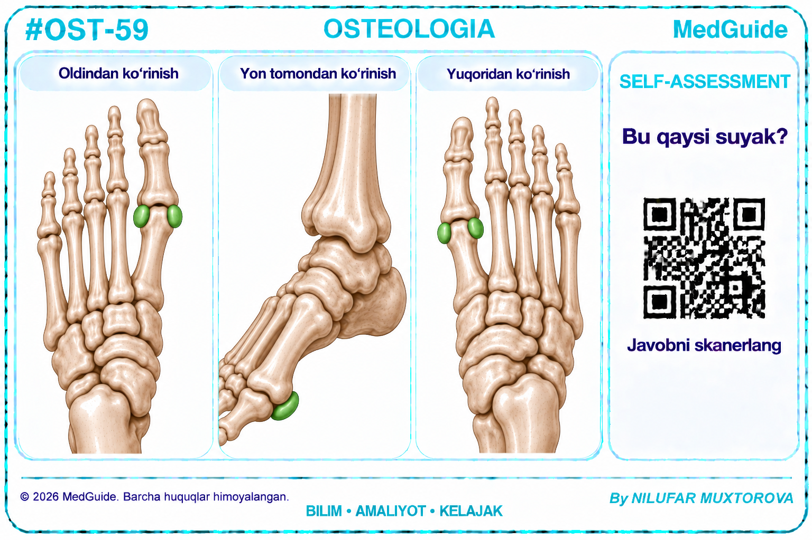
#OST-59: Ossa sesamoidea pedis (Oyoq kafti sesamoid suyaklari)[cite: 1]
- LA: Ossa sesamoidea pedis[cite: 1]
- UZ: Oyoq kafti sesamoid suyaklari[cite: 1]
- EN: Foot sesamoid bones[cite: 1]
- RU: Сесамовидные кости стопы[cite: 1]
- TR: Ayak sesamoid kemikleri[cite: 1]
I-oyoq barmog'ining kaft-falanga bo'g'imi tagida (flexor hallucis brevis payida) ikkita doimiy medial va lateral sesamoid suyaklar joylashadi[cite: 1].
Yurish va yugurish vaqtida I-barmoqqa tushadigan og'irlikni tekis taqsimlaydi va amortizatsiya qiladi[cite: 1].
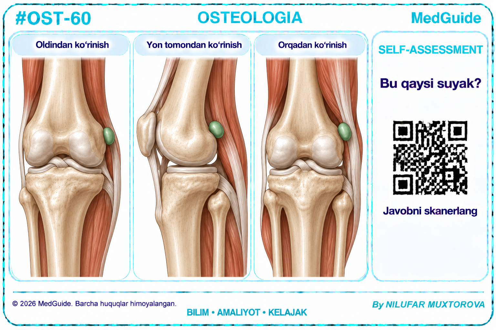
#OST-60: Fabella (Kichik sesamoid suyak)[cite: 1]
- LA: Fabella[cite: 1]
- UZ: Fabella (tizza sohasi kichik sesamoid suyagi)[cite: 1]
- EN: Fabella[cite: 1]
- RU: Фабелла[cite: 1]
- TR: Fabella[cite: 1]
M. gastrocnemius (boldir egizak muskuli) tashqi boshining payi ichida uchraydigan o'zgaruvchan (konstitutsional) kichik sesamoid suyak. Hammada ham bo'lmaydi (anatomik variant)[cite: 1].
Tizza bo'g'imining orqa-tashqi qismida joylashadi[cite: 1].